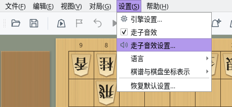
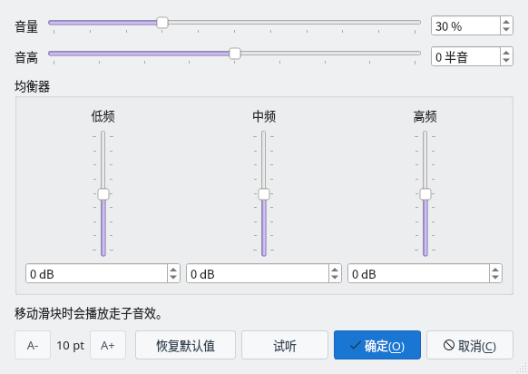

走子音效
走子的瞬间，会发出棋子落在棋盘上的清脆声音
开关音效
调整音量
均衡器
截图在 Linux 上以简体中文界面拍摄。
开关走子音效
随时可以从“设置”菜单切换走子音效
1
用“设置”→“走子音效”切换
打开菜单栏的“设置”，其中有“走子音效”项目，带有勾选标记时会播放走子音效。默认为开启，每次选择都会在开启和关闭之间切换。


“设置”菜单：用“走子音效”开关，用“走子音效设置…”调整声音
2
自动保存设置
开关状态会自动保存，下次启动时继续使用。菜单面板的“设置”标签页中也有相同的“走子音效”和“走子音效设置…”按钮。
调整音量与音色
在“走子音效设置”对话框中调整音量、音高和均衡器
1
打开“设置”→“走子音效设置…”
对话框中有音量和音高的横向滑块，以及均衡器的低频、中频、高频纵向滑块。松开滑块时会以当前设置播放走子音效，可以边听边调整。点击“试听”随时可以确认当前设置的声音（即使关闭了走子音效也会播放）。


走子音效设置对话框（初始状态）
2
用滑块调出喜欢的声音
- 音量：0〜100%，默认值为 30%。刻度符合人耳对音量的感受。
- 音高：-12〜+12 半音。调高时声音更高更短，调低时声音更低更长。
- 均衡器：低频、中频、高频分别在 -12〜+12 dB 之间调整。提高中频会增强敲击感，降低高频会使声音更柔和。
也可以在各滑块右侧或下方的输入框中直接输入数值。
3
确定、取消与恢复默认值
点击“确定”确认设置。点击“取消”会恢复到打开对话框时的设置。点击“恢复默认值”可恢复为音量 30%、音高 0、均衡器 0 的初始设置。确认的设置会自动保存，下次启动时继续使用。
左下角的“A-”“A+”可以调整对话框的文字大小。文字大小和对话框大小也会在下次继续使用。